Ficolia · prototype, version 342 · 18 octobre 2026
Revue critique de tout ce qui est construit sur le canevas, soit 193 planches réparties sur 12 pages. Le fond et la forme y sont passés sous trois regards : designer UI/UX, développeur d'applications mobiles, femme enceinte.
Synthèse
Un prototype rigoureux, honnête et cohérent, qui couvre presque tous les cas difficiles. Il lui manque encore l'essentiel pour l'utilisatrice : un verdict qui dit pourquoi et quoi faire, et les signes qui donnent confiance.
Casquette 1
La forme, c'est ce qui se voit : couleurs, typographie, hiérarchie, composants. Le fond, c'est l'expérience : parcours, contenus, décisions.
Couleurs de verdict réservées et mesurées : noir sur les niveaux 1 à 3, blanc sur le niveau 4, contrastes de 6,5 à 14,3:1. L'ordre des quatre teintes est conservé dans les trois formes de daltonisme. Le bleu d'information (rappel de lot, verdict à actualiser, encadrés) ne se confond jamais avec un verdict.Page « Fondations » · étapes 3 à 5
Atkinson Hyperlegible Next partout : un bon choix pour des yeux fatigués, une vue troublée ou des nausées.
Des composants qui se répètent à l'identique : bouton rond de retour, rangées à chevron, cartes, barre d'onglets en pilule. On apprend l'application une fois.
Les illustrations (cagette vide, store de l'étal, photomaton, figue qui lève le bras) donnent à la marque une voix propre, là où d'autres applications posent une icône d'erreur.Étapes 3, 4 et 5
Le texte agrandi tient : à 200 %, le verdict reste lisible et la photo se réduit d'elle-même.
La hiérarchie de l'écran de verdict : la carte produit et sa grande photo occupent le premier tiers. Le libellé, à 19 px, a la taille du titre « Grossesse ». La réponse attendue n'est pas l'élément le plus fort de l'écran, et sur un petit téléphone la phrase du verdict descend vers le bas.Tous les écrans de verdict
L'échelle à côté du nom est minuscule et redit ce que le cadre dit déjà. Elle n'apparaît pas là où elle aurait quelque chose à apprendre (historique, écran produit). Le choix entre les variantes A et E est ouvert depuis le 13/10.Étape 5 · « Échelle du verdict »
Accueil : le nom reste « Fic lia » pendant deux écrans, le temps que la figue se pose. Sur la capture prise à 2,6 s, la figue passe sur le texte de l'accueil 2/3 et en cache une partie.Étape 1 · accueil 1/3 et 2/3
Écran produit : « Ce n'est pas ce produit » a la largeur et le contour d'une action principale. Il pèse autant que l'accès au verdict.Écrans produit, étapes 1, 2, 3, 5, 7
Le store rayé de « Ficolia fait une pause » est rouge grenade. Sur un écran sans verdict, il peut se lire comme une alerte (déjà relevé le 13/10, à observer au test).
Le petit rond du renvoi « Crevasses » n'a qu'une icône : un livre n'évoque pas les crevasses.Ligne allaitement · rangées 2 et 4
Pas de thème sombre au lancement : c'est une décision, il est renvoyé à la v2 (D-115, D1). Or on scanne souvent le soir, dans une salle de bain, à côté de quelqu'un qui dort : à garder en tête pour la v2.
Sur le verdict, remplacer la grande photo par la carte compacte de l'écran « Ingrédients » (vignette, nom, marque) : le produit reste identifié et le verdict remonte. Cela revient sur la décision du 06/10 « photo dans la carte produit » : à juger sur planche.
Donner au libellé du verdict une taille supérieure à celle du titre de l'écran, quitte à placer le « i » sous le libellé au niveau 1.
Trancher l'échelle avec l'épreuve des cinq secondes déjà prévue au test. Si elle reste, la montrer là où elle apporte quelque chose.
Ramener « Ce n'est pas ce produit » à un lien, ou à un bouton secondaire plus petit. Donner un libellé au petit rond (« Crevasses »), ou préférer la pastille parmi les mentions.
Pour la v2, préparer les jetons d'un thème sombre, couleurs de verdict comprises, mesurés comme ceux du thème clair.
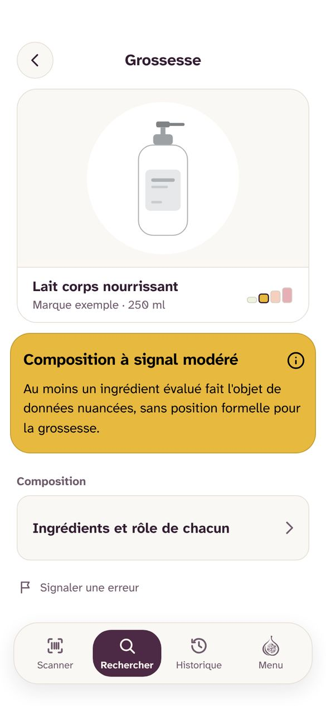
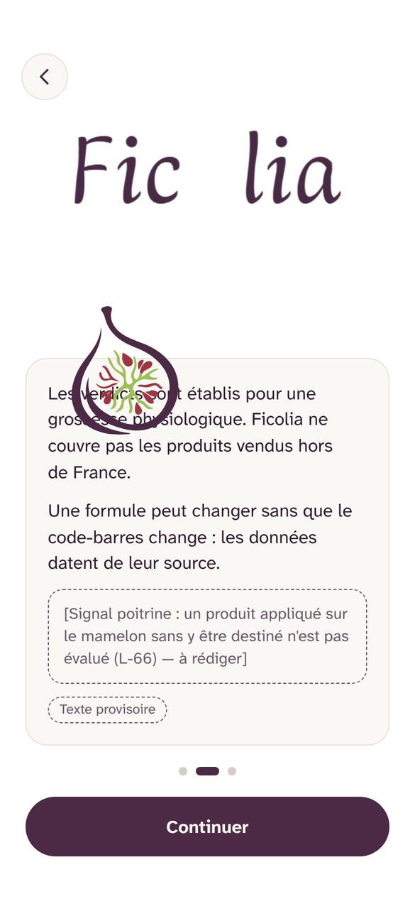
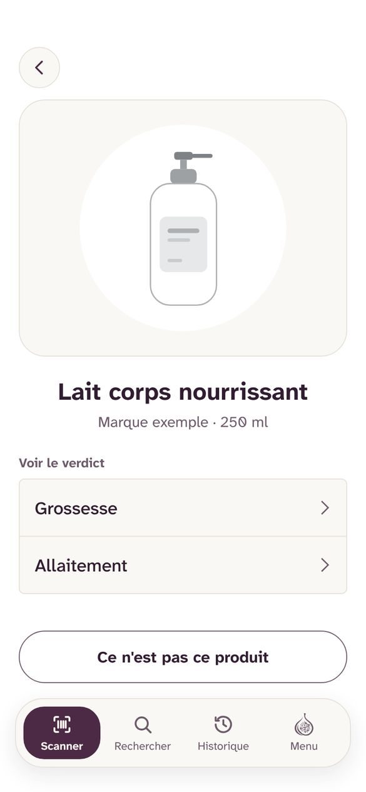
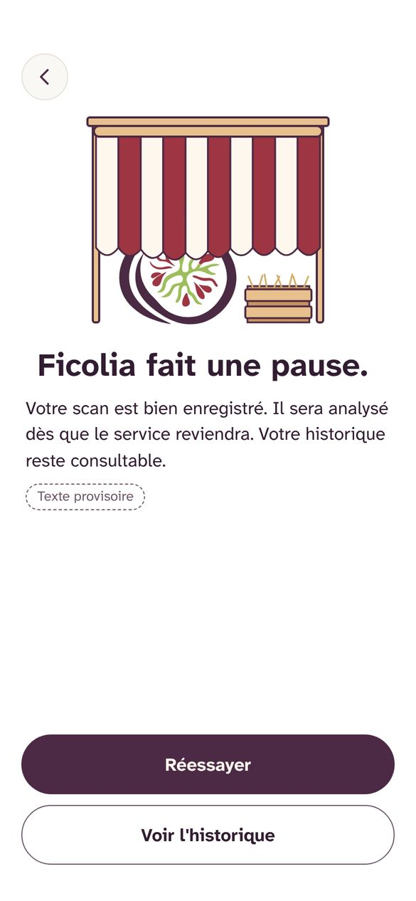
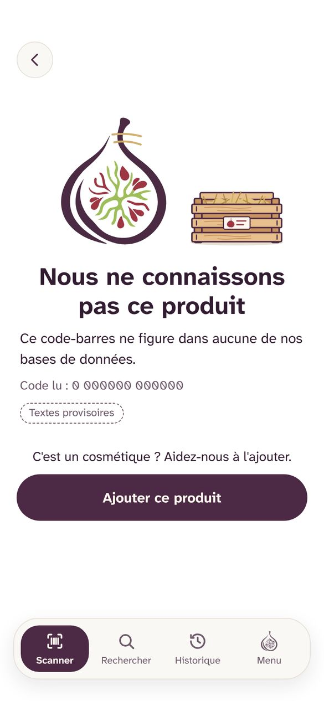
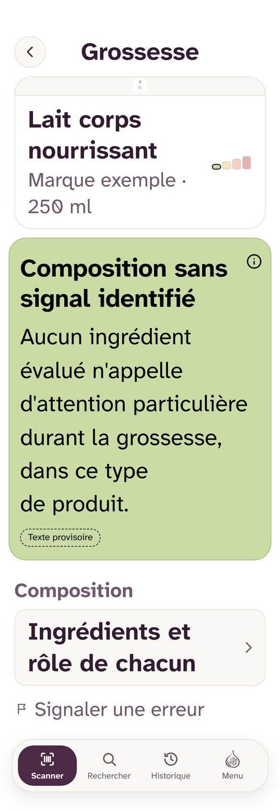
Une boucle claire avec plusieurs portes : scanner, saisir le code-barres, chercher par nom, rouvrir depuis l'historique.
Les écrans d'échec disent la vérité et proposent une suite quand elle existe : « Ajouter ce produit », « Photographier la liste », scan mis en attente.
Signalement et contribution sont bien pensés : objets en langage courant, formulaires courts, photos guidées, attentes honnêtes (« pas de verdict tout de suite »), e-mail facultatif et effacé ensuite.Étape 4
L'alerte de réévaluation ne bloque rien, et l'utilisatrice peut l'arrêter.Étape 5
Le « i » explique un niveau sans quitter l'écran, et le lexique rassemble tous les mots de l'application.
Le verdict ne nomme pas sa cause. L'ingrédient qui détermine le niveau porte une étiquette dans la liste : à la 6e ligne dans l'exemple, peut-être à la 25e dans une vraie liste de 35 ingrédients. Le lien « Voir ce qui détermine ce niveau » a été retiré le 06/10.
Il manque le « et maintenant ? ». Au niveau 2, « données nuancées, sans position formelle » laisse la lectrice seule avec sa question : « je peux ou pas ? ». Aux niveaux 3 et 4, le texte propre au niveau reste à écrire.
Chaque scan coûte un écran de plus : l'écran produit, puis « Grossesse ». Sans profil, et c'est un choix assumé, il faut choisir entre les deux lignes à chaque fois.
L'historique ne montre aucun niveau (décision 106). Impossible de voir d'un coup d'œil quels produits de sa salle de bain sont à revoir. La raison est solide (deux verdicts, jamais la couleur seule), mais le coût pour l'utilisatrice est réel.
« Ce produit a été réévalué » ne dit ni dans quel sens ni pourquoi (D-52). Une femme enceinte lira d'abord « c'est pire ».
Des impasses. Dans « Évaluation incomplète · le type n'a pas été précisé », rien ne permet de préciser le type depuis l'écran. « Pas encore évalué » et « pas un cosmétique » s'arrêtent sur une phrase.Étape 3
La ligne allaitement empile les notions : zone de tétée, inhalation, contact peau à peau, produit parfumé. Au-delà de deux mentions, la troisième part en tête de la liste des ingrédients. Une mère fatiguée risque de ne pas la voir, alors qu'elle concerne le peau à peau.Ligne allaitement · rangée 3
Huile essentielle pure : « Composition incompatible » quand la concentration n'est pas déclarée met « on ne sait pas » et « c'est dangereux » sous le même rouge (décision 149, qualification attendue de la juriste).Étape 7
L'accueil impose trois écrans de texte et une acceptation avant de montrer quoi que ce soit d'utile. Votre idée d'une prise en main au premier usage va dans le bon sens.
Sur le verdict, une ligne « Ce qui détermine ce niveau : [ingrédient] » qui ouvre son panneau. À défaut, rétablir le lien vers l'ingrédient.
Écrire les textes des niveaux 2 à 4 pour qu'ils répondent à trois questions : ce que le niveau veut dire, ce que je peux faire, à qui en parler. Avec la toxicologue et la juriste.
Tester une préférence facultative, gardée sur le téléphone : « enceinte », « j'allaite » ou « les deux ». Elle permettrait d'aller du scan au bon verdict et de montrer le niveau dans l'historique, en texte. Elle revient sur l'absence de profil : à peser avec la juriste. Si elle est refusée, montrer quand même dans l'historique le libellé des deux lignes, en texte court.
Réévaluation : dire au moins le sens du changement (« plus sévère », « moins sévère »). C'est contraire à D-52 : à trancher après un test.
Mettre « Préciser le type » directement dans le cadre « Évaluation incomplète ». Allaitement : ordonner les mentions par importance, et ne jamais renvoyer le contact peau à peau hors de l'écran.
Huile pure : un état à part, du type « non évaluable, par précaution », plutôt que le libellé du niveau 4. À décider avec la toxicologue et la juriste.
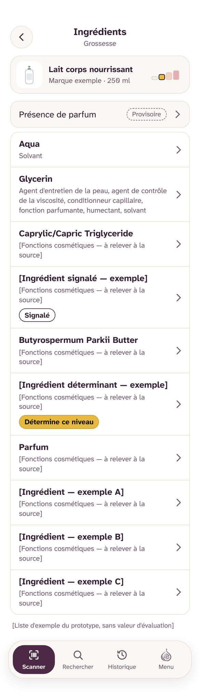
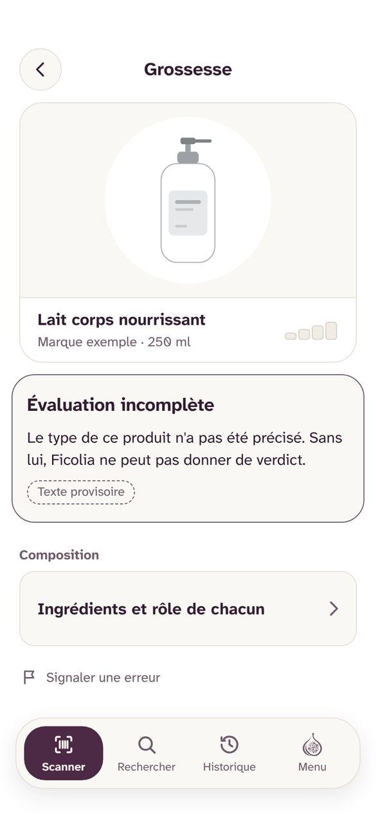
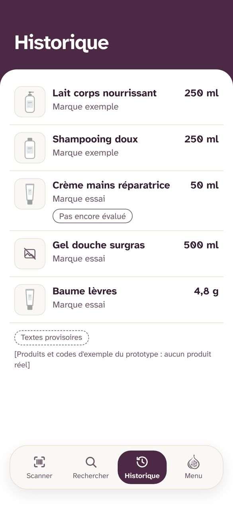
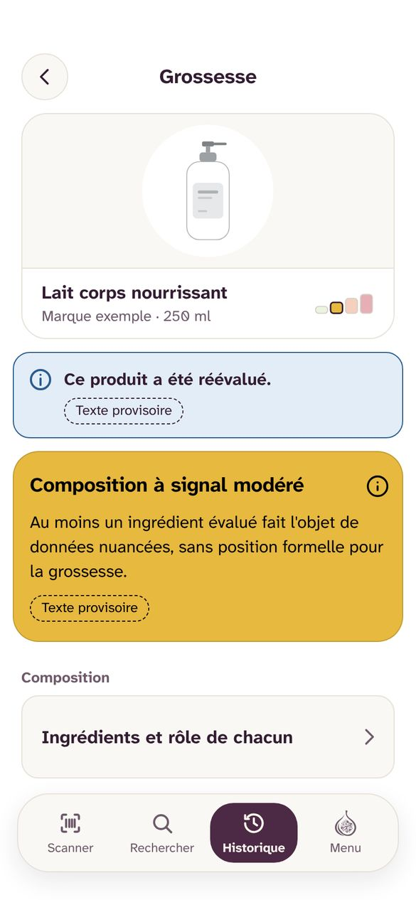
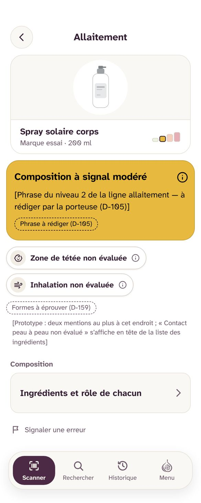
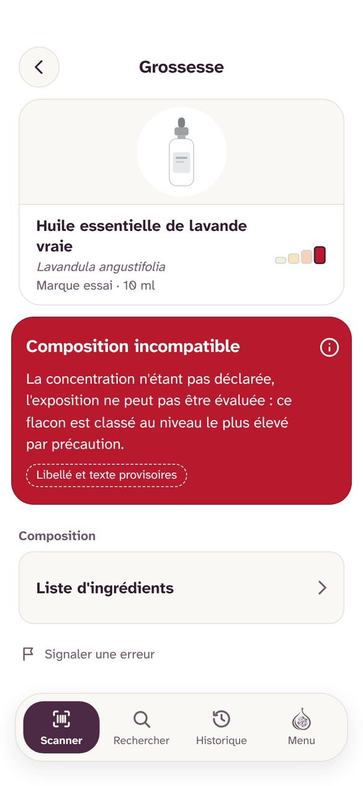
Casquette 2
Ce que le prototype rend facile ou difficile à construire, à maintenir et à faire tourner sur de vrais téléphones.
Une architecture saine pour la vie privée et le hors-ligne : catalogue évalué sur le téléphone (D-91), historique local, comparaison des réévaluations sur l'appareil (T-452), aucune journalisation par personne (T-129).
Les états du système sont ceux qu'un développeur rencontrera : réseau faible avec délai, scan mis en attente, verdict trop ancien « à actualiser », source externe muette, mise à jour obligatoire, autorisation de la caméra demandée, refusée, puis réglages.
Les demandes d'autorisation suivent les règles d'Apple (pas d'écran avant la demande). Le cas du sélecteur de photos sans autorisation est identifié.
Des contrôles automatiques existent déjà : mots interdits, contrastes, cibles de 44 px, toutes les combinaisons de réglages des écrans de verdict.
Le statut de chaque texte (provisoire ou acté) est suivi écran par écran : c'est la base d'un fichier de chaînes propre.
Pas de source unique de vérité pour le développement : 193 planches, des gabarits copiés jusqu'à 19 fois, et une page « Fondations » en retard (libellé du verdict à 30 px au lieu de 19, cœur encore présenté alors qu'il est retiré).
La qualité des données. Tout repose sur la lecture des listes d'ingrédients venues de sources externes, avec leurs fautes, leurs traductions et leurs ingrédients inconnus. Sans mesure précoce (« dix salles de bains », T-515), « Évaluation incomplète » risque d'être l'écran le plus vu au lancement.
La recherche par nom ne marche pas hors ligne, alors que le catalogue est sur le téléphone (L-35, décision 113). À vérifier : si le catalogue contient les noms, une recherche locale est possible.
La mise à jour obligatoire bloque aussi l'historique (décision 161). Or l'historique est local et se lit sans serveur : le bloquer n'est utile que si son format change.
Envois manqués (signalement, photos, message) : il faut toucher « Réessayer », alors que les scans en attente repartent tout seuls.
Animations en vidéo, mp4 sur fond blanc avec un webm transparent en secours. Un webm transparent n'est pas lu nativement sur iOS, et une douzaine de fichiers de 0,3 à 1 Mo alourdissent l'application. Il n'y a pas encore d'image fixe choisie pour les téléphones qui réduisent les animations.
Taille du texte : la barre d'onglets reste à 12 px fixes, même à 200 %. Les écrans de recherche n'ont pas été prototypés en texte agrandi.
Android : la demande de caméra peut ne pas afficher son motif, et le retour système n'est pas représenté.
Avant le passage au développement, rassembler :
Archiver « Pistes de style » et « Direction consolidée ».
Mettre à jour « Fondations » (point 3 de la liste de fin de session). Mesurer tôt la couverture réelle : part des produits trouvés, part des listes lues en entier.
Une file d'envoi unique, rejouée au retour du réseau, pour tout ce qui part vers Ficolia.
Des animations vectorielles (Lottie ou équivalent) : plus légères, nettes à toutes les tailles, compatibles avec un thème sombre. Et une image fixe choisie pour chacune (séance déjà prévue).
Laisser l'historique lisible pendant une mise à jour obligatoire, avec un bandeau. Prévoir dès maintenant le thème sombre de la v2 (D-115, D1), le texte agrandi partout, l'ordre de lecture du verdict pour les lecteurs d'écran, et les règles des magasins d'applications pour les applications de santé.
Casquette 3
Regard simulé par Claude, à travers une utilisatrice imaginaire : Léa, 31 ans, enceinte de quatre mois de son premier enfant, fatiguée, la peau qui change, qui lit beaucoup en ligne. Ce ne sont pas des résultats de test : ce sont des hypothèses à vérifier avec de vraies utilisatrices.
Ce qui marchele ton calme, « ce n'est pas un avis médical », pas de compte à créer.
Ce qui manquedes mots simples, et savoir qui est derrière l'application.
Ce qui marchede grandes cibles, une main suffit, la barre en bas de l'écran.
Ce qui manquela cause et une piste (« que faire ? ») sur le même écran.
Constatc'est le moment le plus important de l'application, et il n'est pas encore dessiné (T-404, textes des niveaux 3 et 4).
Ce qu'il faudraitun texte qui rassure sans minimiser, qui dit quoi faire maintenant et à qui en parler, écrit avec la toxicologue et relu par la juriste.
Ce qui marcheun historique qui se remplit tout seul, sans compte.
Ce qui manquel'état de chaque produit d'un coup d'œil, un thème sombre, un moyen de partager.
Ce qui marchela compassion du texte, et la franchise : Ficolia ne reçoit pas ces déclarations.
Ce qu'il faudraitorienter d'abord vers sa sage-femme, son médecin, ou les urgences si besoin, avant le portail de déclaration.
Ce qui marchela fiche « Crevasses » à portée de doigt, au bon moment.
Ce qui manquemoins de notions à la fois, et un libellé sur le petit rond.
Ce qui me ferait revenirun verdict clair, sa cause, et quoi faire.
Ce qui me ferait partiravoir peur sans savoir quoi faire.
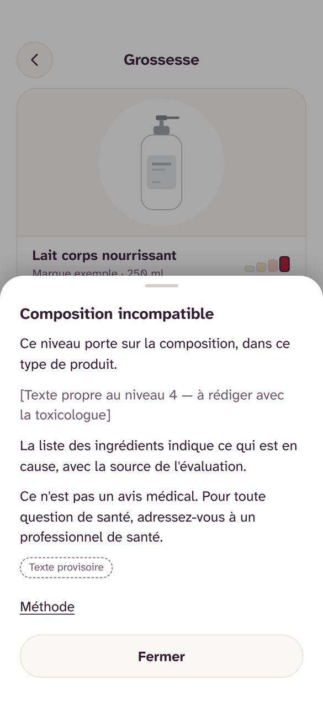
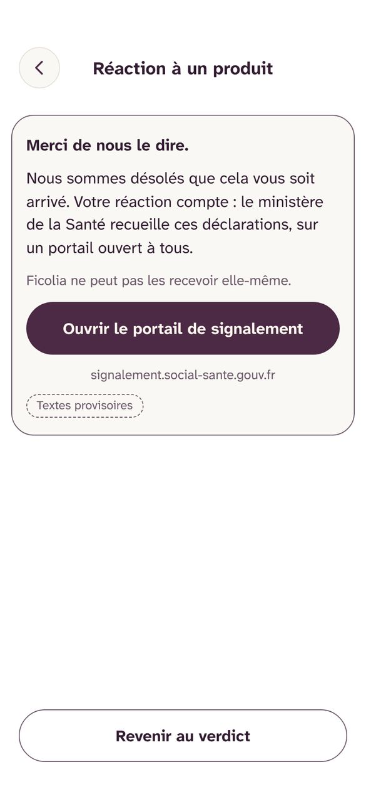
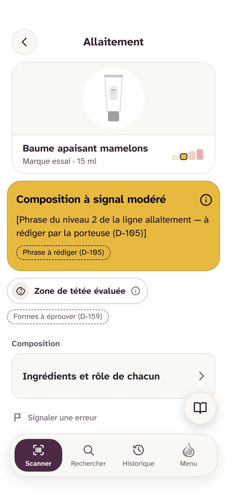
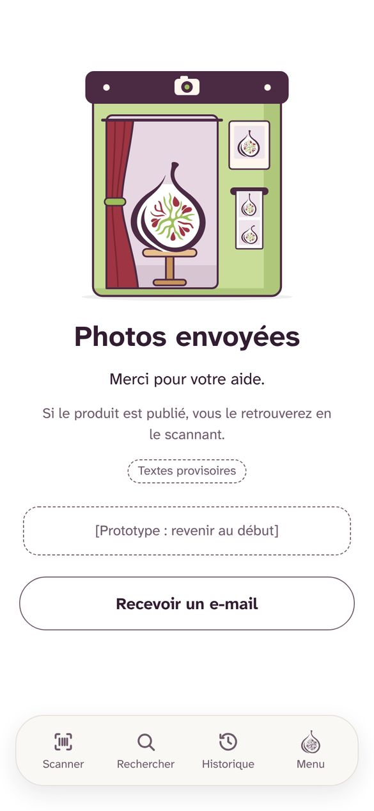
Plan d'action
P1 : avant les premiers tests utilisateurs. P2 : pendant les tests. P3 : avant le passage au développement. Certaines actions reviennent sur des décisions déjà prises ; elles sont signalées et restent à trancher par vous.
Limites
Prochaine étape suggérée : choisir ensemble, parmi les P1, ce qui entre dans la prochaine séance, avant de répondre aux questions en attente.